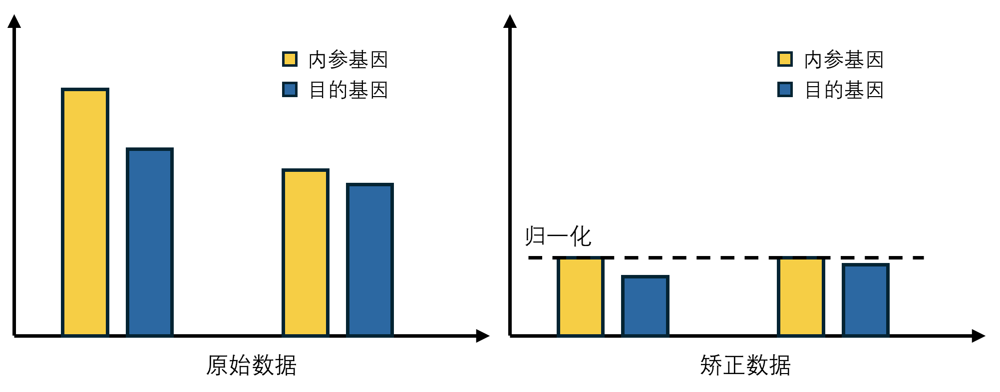
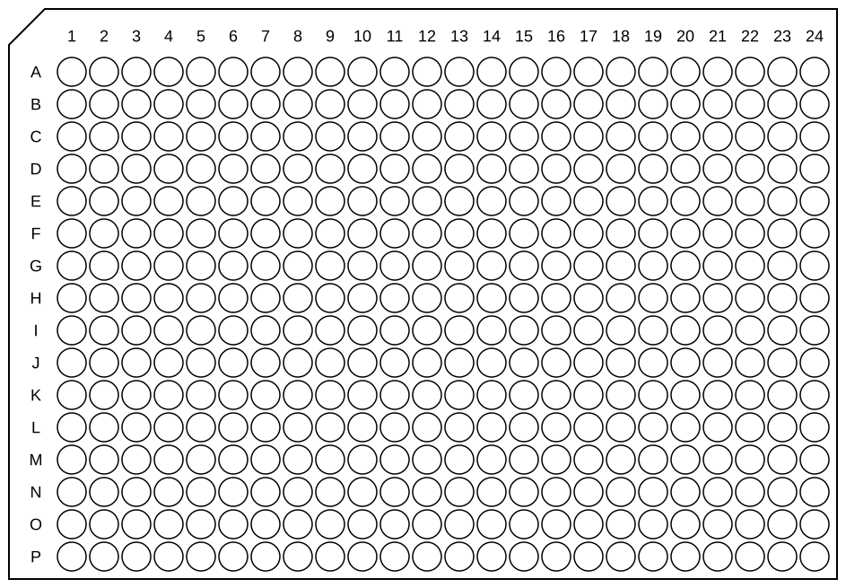
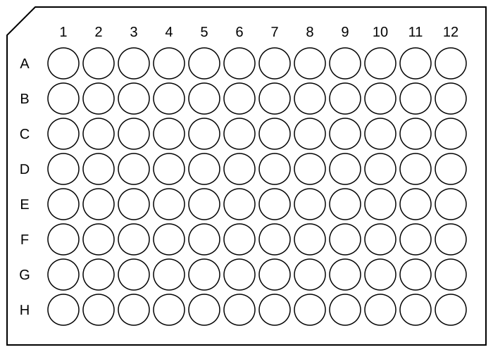

前言
定量逆转录PCR（quantitative reverse transcription PCR, RT-qPCR）是应用于以RNA作为起始材料的PCR实验中的一种实验方法。在该方法中，总RNA或信使RNA（mRNA）首先通过逆转录酶转录成互补DNA（cDNA）。随后，以cDNA为模板进行qPCR反应。
本文使用 SYBR 荧光染料（探针法要定制太贵了），记录了体系与标准流程。
原理
基本原理
我们在第一篇 PCR 博客里简单提到过相对定量 PCR 的原理，它本质上就是一次的 PCR。不同的是，我们会加入一种荧光染料，该染料在游离状态只会发出极其微弱的本底荧光（几乎可以忽略不计）。但是，一旦它嵌入到 DNA 双链的小沟结构中，其分子的空间构象会被固定，荧光量子产率会发生数百到上千倍（通常约为 1000 倍）的剧烈放大。也就是说，我的体系中 DNA 双链越多，荧光越强，可以相对的进行 DNA 含量测得。
如果模板的初始含量不同，它们在相同的轮数扩增后，它们之间含量的差异性就会被放大。因此，我们设定一个荧光阈值，去统计到达该阈值时该样品孔所经历的 PCR 循环数，就可以进行相对的定量，来判断初始模板含量差异。其中，所经历的 PCR 循环数我们称为 Cq 值，它是一个整数（因为扩增阶段每轮扩增后只进行一次单次测定），但是我们会进行曲线拟合，我们会基于你设定的荧光值根据拟合曲线算出一个更准确的 Cq 值，所以我们最终得到的是一个浮点数。
最终结果肯定会随着我们初始模板加入量的差异而有所区别（蝴蝶效应）。但是如果我们要研究某一个某个基因的表达量（转录了多少 mRNA），我们肯定要修订因为 mRNA 提取、随机性等诸多因素导致初始模板量不一样。这时，我们就要引入一个对照：内参基因对照，内参基因都是管家基因，不管怎么样它的表达量都恒定，在跑 PCR 时一起跑上，就可以对我们的 Cq 值进行一次修订。

即使有内参基因的修订，你也因该在配体系时尽可能控制模板量加入一致。也就是我们说的：“跑齐内参”：最终内参基因相差应该不大。内参基因是生物学上对微弱误差的精确修订，不是我们随便乱加模板量的底气。
Ct 值和 Cq 值完全一样，在算法中，我们用 Ct 值代替 Cq 值。
数据矫正与分析
面对内参基因的 $n$ 个重复（通常是技术重复，比如 3 个孔），我们绝不能将目标基因的某一个重复与内参基因的某一个重复“强行一对一”去相减（比如用目标基因的孔 1 减内参基因的孔 1）。因为这些技术重复来自于同一个加样池，它们之间的排序是没有物理或生物学意义的。
正确的做法是采用“先质控，再平均，最后归一化”的数学逻辑：
质控：评估与剔除异常值
在直接计算之前，必须先检查这 $n$ 个内参基因 $Ct$ 值的重现性。我们通常计算这 $n$ 个值的标准差。标准差计算公式很简单，在这里我们使用有偏估计标准差公式（因为我们要评估样本方差）：$$s_n = \sqrt{\frac{1}{n} \sum_{i=1}^{n} (x_i - \bar{x})^2}$$
如果 $SD < 0.5$（严格一点会要求 $< 0.2$），说明这 $n$ 个重复数据平行性很好，可以全部保留。如果其中某一个 $Ct$ 值明显偏离其他值，导致 $SD$ 过大，我们需要果断剔除这个异常值，只保留剩下的 $n-1$ 个良好数据。
计算内参和目标基因的平均值
一旦确定了有效的数据点，直接计算它们的算术平均值，对于内参基因：$$Ct_{\text{ref, mean}} = \frac{1}{n} \sum_{i=1}^{n} Ct_{\text{ref}, i}$$
对于目标基因（Target gene），它同样会有 $m$ 个重复（通常 $m=n$），也一样计算其平均值：$$Ct_{\text{target, mean}} = \frac{1}{m} \sum_{j=1}^{m} Ct_{\text{target}, j}$$
散点柱状图（带有独立数据点的柱状图）主要用来展示生物学重复（Biological Replicates），而不是技术重复（Technical Replicates）。
归一化：计算 $\Delta Ct$
我们接下来根据内参基因矫正目的基因：$$\Delta Ct = Ct_{\text{target, mean}} - Ct_{\text{ref, mean}}$$
因为 $Ct$ 值是“对数”世界的产物，对数世界里的减法，等价于真实世界里的除法，所以我们这里用减法不用除法。
初始倍数计算
在学术论文中，大家更喜欢看“相较于对照组（这里的对照组不是内参基因），基因表达上升了多少倍”。
因为我们想要的是初始分子浓度的差异倍数， 那么根据 PCR 原理，我们有公式：$$N_t = N_0 \times 2^{\Delta Ct}$$
其中 $N_0$ 为初始浓度，$Ct$ 为拟合后的循环数($n$)，$N_t$ 为终止浓度。
根据上面的公式，我们可以把初始浓度 $N_0$ 反推出来：$$N_0 = N_t \times 2^{-\Delta Ct}$$
现在，我们拿处理组除以对照组（到达阈值时的 $N_t$ 是一样的）：$$Fold\ Change = \frac{N_{0,\text{处理}}}{N_{0,\text{对照}}} = \frac{N_t \times 2^{-\Delta Ct_{\text{处理}}}}{N_t \times 2^{-\Delta Ct_{\text{对照}}}}$$
约掉常数 $N_t$ 后，根据指数运算的除法法则（同底数幂相除，底数不变，指数相减）：$$Fold\ Change = \frac{2^{-\Delta Ct_{\text{处理}}}}{2^{-\Delta Ct_{\text{对照}}}} = 2^{-(\Delta Ct_{\text{处理}} -\Delta Ct_{\text{对照}})} = 2^{-\Delta\Delta Ct}$$
如果算出来的结果是 $8$，就意味着处理组中该基因的相对表达量是对照组的 $8$ 倍。
我们会在后面将其抽象为一道数学推演，使其更容易理解。
矫正原理
我们计初始模板浓度为 $N_0$，到达阈值扩增轮数为 $n$，到达荧光阈值时模板浓度为 $N_t$，根据 PCR 原理，在指数扩增期有下述公式：
$$\begin{equation}N_t = N_0 \cdot 2^{n}\end{equation}$$计内参初始量为 $N_{0ref}$，目的初始量为 $N_{0tar}$，我们要得到单位内参基因下目的基因的表达量，即为：
$$\begin{equation}N_{0_{tarfix}} = \frac{N_{0_{tar}}}{N_{0_{ref}}} \end{equation}$$将 (1) 式代入 (2) 式中可得：
$$\begin{equation}N_{0_{tarfix}} = \frac{N_{t_{tar}}\cdot 2^{-n_{tar}}}{N_{t_{ref}}\cdot 2^{-n_{ref}}} \end{equation}$$因为到达阈值荧光强度时，$N_{t_{tar}} = N_{t_{ref}}$，我们继续化简：
$$\begin{equation}N_{0_{tarfix}} = \frac{2^{-n_{tar}}}{2^{-n_{ref}}} = 2^{n_{ref} - n_{tar}}\end{equation}$$我们又喜欢用 $n$ 进行最终定量，根据 (1) 式：
$$\begin{equation}n =log_2\frac{N_t}{N_0} \end{equation}$$同样处理 (4) 式：
$$\begin{equation}log_2 N_{0_{tarfix}} = n_{ref} - n_{tar}\end{equation}$$又有：
$$\begin{equation}N_{0_{tarfix}} = \frac{N_{t_{tarfix}}}{2^{n_{tarfix}}} \end{equation}$$(7) 带入 (6) 可得：
$$log_2\frac{N_{t_{tarfix}}}{2^{n_{tarfix}}} = log_2N_{t_{tarfix}} - n_{tarfix} = n_{ref} - n_{tar}$$ $$\begin{equation}\Rightarrow n_{tarfix} = n_{tar} - n_{ref} + log_2N_{t_{tarfix}}\end{equation}$$现在我们得到了一个很有意思的东西：$log_2N_{t_{tarfix}}$。$N_t$ 是机器设定的荧光阈值对应的 DNA 分子数（比如 100 亿个）。对于同一次上机实验来说，这是一个绝对的常数。因此，$\log_2 N_t$ 就是一个常数。
根据公式 $n_{tar-fix} = \Delta Ct + 常数$，你可以看出：我们平时算的 $\Delta Ct$，本质上就是那个“修订后的循环数 $n_{tar-fix}$”！ 它们之间仅仅相差了一个机器的系统常数。
为什么学术界只用 $\Delta Ct$ 而不直接求 $n_{tar-fix}$？
因为在现实的实验中，我们根本不知道 $N_t$ 具体等于多少个 DNA 分子，所以 $\log_2 N_t$ 这个常数是算不出来的。但是这完全不影响我们进行跨样本比对！当你拿处理组（Treatment）和对照组（Control）进行比较时，你会做减法（也就是 $\Delta\Delta Ct$），我们算不出来的常数 $\log_2 N_t$ 被完美抵消掉了，我们下面会继续计算。
$FC$ 原理
我们计初始模板浓度为 $N_0$，到达阈值扩增轮数为 $n$，到达荧光阈值时模板浓度为 $N_t$，根据 PCR 原理，在指数扩增期有下述公式：
$$\begin{equation}N_t = N_0 \cdot 2^{n}\end{equation}$$我们要得到实验组的 $N_0$（记为 $N_{0_T}$）相对于对照组的 $N_0$（记为 $N_{0_C}$）发生了多少倍的变化，变化数记为 $FC$，则有：
$$\begin{equation}FC = \frac{N_{0_T}}{N_{0_C}}\end{equation}$$将 (9) 式代入 (10) 式中可得：
$$\begin{equation}FC = \frac{N_{t_T}\cdot 2^{-n_T}}{N_{t_C}\cdot 2^{-n_C}}\end{equation}$$因为到达阈值荧光强度时，$N_{t_T} = N_{t_C}$，我们继续化简：
$$\begin{equation}FC = \frac{2^{-n_T}}{2^{-n_C}} = 2^{n_C - n_T}\end{equation}$$我们将 (8) 式中带内参的修订值放到 (11) 式中：
$$FC = 2^{n_C - n_T} = 2^{n_{C_{tarfix}} - n_{T_{tarfix}}} = 2^{(n_{C_{tar}} - n_{C_{ref}} + log_2N_{t_{tarfix}}) - (n_{T_{tar}} - n_{T_{ref}} + log_2N_{t_{tarfix}})}$$ $$\begin{equation}\Rightarrow FC = 2^{n_{C_{tar}} + n_{T_{ref}} - n_{C_{ref}} - n_{T_{tar}}}\end{equation}$$我们会根据回归方程去更精确的拟定循环轮数 $n$，我们得到以下关系：
$$\begin{equation}\left\{\begin{aligned} n_{ref} &= Ct_{\text{ref}} \\ n_{tar} &= Ct_{\text{tar}} \\ \Delta Ct &= Ct_{\text{tar}} - Ct_{\text{ref}} \end{aligned}\right.\end{equation}$$将 (14) 代入 (13) 得：
\begin{equation}FC = 2^{\Delta Ct_C - \Delta Ct_T} \end{equation}我们一般计 $\Delta\Delta Ct = \Delta Ct_T - \Delta Ct_C$，代入 (15) 得：
$$FC = 2^{-\Delta\Delta Ct}$$经过笔者反复修改斟酌，至此，我们完成了极为严谨且准确的推导，没有任何逻辑断层。很多做了一辈子 qPCR 的科研人员，可能都只是在机械地套用 $2^{-\Delta\Delta Ct}$ 这个公式，而我们现在已经彻底掌握了它的底层原理！现在，给你一张纸、一支笔，你也可以手动计算！
Protocol
体系
在使用 384 孔板进行 qPCR 时，一般配置 10 μl 的体系，我们使用预混液进行快速体系搭建：
| 组份 | 体积 |
|---|---|
| SYBR qPCR Mix | 5 μl |
| Primer1 (1-2OD) | 1 μl |
| Primer2 (1-2OD) | 1 μl |
| Template cDNA/DNA | 3 μl |
程序
参考所用酶说明书。
附件
你可以把这些打印出来，在纸上标记样本。图片为 .svg 矢量图。


这个脚本可以把你的下机数据 Cq 值整理到表格中，方便取值计算。在使用之前先把下机数据转化为 .csv 文件。